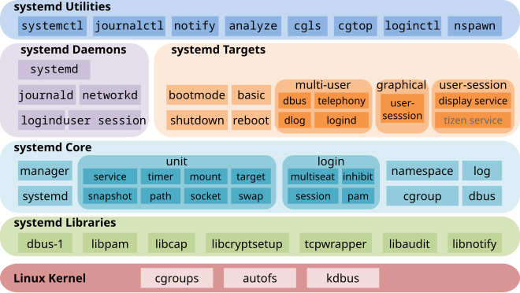

advancedLinux
linux权限
/etc/passwd 文件存储了所有UID和相关信息，但是为了安全每个UID对应的密码被保存在/etc/shadow。/etc/group 文件保存了所有GID和相关信息
文件权限
1 | |
在 ls -l 命令输出中，权限编码显示的是文件或目录的权限，它采用一个 10 个字符的字符串来表示，具体结构如下：
1 | |
-
第一个字符（文件类型）：
-：表示普通文件（regular file）。d：表示目录（directory）。l：表示符号链接（symbolic link）。b：表示块设备文件（block device）。c：表示字符设备文件（character device）。p：表示命名管道（FIFO）。s：表示套接字文件（socket）。
-
后面的 9 个字符（权限位）：
这 9 个字符表示文件所有者、所属组以及其他用户的权限，按三个三组来划分，每一组表示不同用户的权限，具体如下：- 第 2 到第 4 个字符：表示文件所有者（user）的权限。
- 第 5 到第 7 个字符：表示文件所属组（group）的权限。
- 第 8 到第 10 个字符：表示其他用户（others）的权限。
每组字符的结构如下：
r：表示可读（read）。w：表示可写（write）。x：表示可执行（execute）。-：表示没有该权限。
在 Linux 系统中，文件权限中的
x代表“可执行权限”。具体含义如下：
对于文件，
x表示该文件可以作为一个可执行文件运行，即它可以是一个二进制程序、脚本（如 Shell 脚本）、或者其它类型的可执行文件。如果没有这个权限，用户就无法直接运行这个文件。对于目录，
x表示该目录可以被进入（进入目录的权限），即用户可以使用cd命令进入该目录，并可以访问该目录下的文件和子目录（前提是还要有读取权限r）。
例如：
1 | |
- 第 1 个字符：
d表示目录。 - 第 2 到第 4 个字符：
rwx表示文件所有者有读、写、执行的权限。 - 第 5 到第 7 个字符：
r-x表示所属组用户有读和执行的权限，但没有写的权限。 - 第 8 到第 10 个字符：
r-x表示其他用户有读和执行的权限，但没有写的权限。
ls -l命令在 Linux 和 Unix 系统中用于列出目录中的文件和子目录的详细信息。以下是该命令输出的信息项：
文件类型和权限：第一个字符表示文件类型（如普通文件、目录等），后面的字符表示文件的访问权限（读、写、执行）。
链接数：显示链接到该文件的硬链接数。
所有者：文件的所有者用户名。
用户组：文件所属的用户组名称。
文件大小：以字节为单位显示文件的大小。
修改日期和时间：显示文件最后修改的日期和时间。
文件名：文件或目录的名称。
文件的默认权限由 umask 控制，可以在命令行中查看，在配置文件中修改后即可修改文件的默认权限。
umask 控制 Linux 系统中新创建文件和目录的默认权限，它的作用是指定“应该去掉”哪些权限，而不是直接设定权限。因此，umask 的输出和权限的关系可以通过“从最大权限中减去 umask 值”来理解。
- 权限的基本概念
Linux 中的文件和目录权限分为三类：
- Owner（文件所有者的权限）
- Group（文件所属组的权限）
- Others（其他用户的权限）
每一类权限又分为三种操作权限：
- r（read，读权限，值是
4） - w（write，写权限，值是
2） - x（execute，执行权限，值是
1）
因此，权限的组合是使用一个三位八进制数字表示的，转换成二进制(rwx)就是1有对应权限，0没有对应权限，例如：
rwx对应的值是7(二进制 111)rw-对应的值是6(二进制 110）r--对应的值是4(二进制 100)
每个类的权限对应一个八进制数字，
- umask 输出的格式
umask 输出是一个四位或三位的八进制数字，如 0022 或 022。每一位数字代表的含义是：
- 第一位（可选的，通常是 0）：文件的特殊权限（如 SUID、SGID、粘滞位），一般不影响文件权限。
- 后三位：分别对应“所有者”、“组”、“其他人”的权限掩码。
例如 0022 的意思是：
- 第一个
0：没有特殊权限。 - 第二个
0：不去掉所有者的任何权限。 - 第三个
2：去掉组的写权限。 - 第四个
2：去掉其他用户的写权限。
- 文件和目录的默认权限
新文件和目录的默认最大权限是：
- 文件：最大权限是
666，即rw-rw-rw-，因为新文件通常不会自动设置执行权限。 - 目录：最大权限是
777，即rwxrwxrwx，因为目录必须具备执行权限才能进入。
1 | |
666-026=640，6表示属主rw-，4表示属组r–，0表示其他用户—
修改文件权限
1 | |
其中mode有两种方法表示：
- 八进制数字表示法：例如修改文件权限可以直接 chmod 777 file，这样赋予文件所有人所有权限
- 符号表示法，用三个字符表示如何操作权限，前两个字符代表的含义如下
-
u：用户（文件所有者）
-
g：组（文件所有者所属的组）
-
o：其他人
-
a：所有人（等同于 u、g、o）
-
+：添加权限 -
-：移除权限 -
=：设定精确权限
-
例子：
chmod u+x file：为文件所有者添加执行权限。chmod g-w file：移除组用户的写权限。chmod a=r file：将文件的权限设置为所有用户只读。
修改所属关系
1 | |
将指定文件修改为指定的属主和属组
三个特殊权限
在 Linux 文件权限中，除了常见的读、写、执行权限 (rwx) 之外，还有三个特殊的权限位，分别是 SUID (Set User ID)、SGID (Set Group ID) 和粘滞位 (Sticky Bit)。这些权限位为用户和进程提供了额外的控制，允许文件或目录执行特殊的行为。以下是详细解释：
1. SUID (Set User ID)
SUID 位主要应用于可执行文件，允许一个用户以文件所有者的权限执行该文件，而不仅仅是以当前用户的权限执行。
-
作用：当文件设置了 SUID 位时，执行该文件的用户会临时获得文件所有者的权限。例如，如果一个程序的文件拥有者是
root，那么即使普通用户运行该程序，他们也会在执行程序的过程中临时拥有root权限。 -
显示方式：在文件权限中，SUID 位显示在文件所有者的执行权限位(x位，第三位)上。如果设置了 SUID 位并且该文件所有者有执行权限，该位显示为
s；如果没有执行权限，该位显示为S。示例：
1
-rwsr-xr-x 1 root root /usr/bin/passwd在这个例子中，
passwd命令的所有者root有 SUID 权限。用户执行passwd命令时，临时拥有root权限，允许他们修改密码。 -
设置方式：使用
chmod命令：1
chmod u+s filename
2. SGID (Set Group ID)
SGID 位可以应用于可执行文件和目录，其作用在文件和目录上有所不同。
-
文件上的作用：如果一个可执行文件设置了 SGID 位，用户在执行该文件时会临时以文件所属组的权限执行。类似于 SUID 位的作用，只不过这是针对组权限。
-
目录上的作用：SGID 位在目录上非常有用。设置 SGID 位的目录中的新文件或子目录，会自动继承该目录的组权限，而不是创建文件的用户的默认组。这对于协作项目中的文件共享非常方便。
-
显示方式：在文件权限中，SGID 位显示在组执行权限位上。如果设置了 SGID 位并且该组有执行权限，该位显示为
s；如果没有执行权限，该位显示为S。示例：
1
drwxrwsr-x 2 user group /path/to/dir在这个例子中，
/path/to/dir目录具有 SGID 位，表示该目录内新创建的文件将自动继承group组的权限。 -
设置方式：使用
chmod命令：1
chmod g+s filename_or_directory
目录设置了SGID之后，强制该目录下创建的所有文件的组权限都是SGID对应的权限，在文件共享中很有用
3. 粘滞位 (Sticky Bit)
粘滞位主要用于目录，特别是像 /tmp 这样的公共目录，用于限制对目录中文件的删除操作。
-
作用：如果在一个目录上设置了粘滞位，只有文件的所有者、目录的所有者或者超级用户 (
root) 可以删除目录中的文件。其他用户即使有写权限，也不能删除他们没有所有权的文件。这对公共访问目录中的文件安全性非常重要。 -
显示方式：粘滞位显示在其他用户的执行权限位上。如果设置了粘滞位并且其他用户有执行权限，该位显示为
t；如果没有执行权限，该位显示为T。示例：
1
drwxrwxrwt 2 root root /tmp在这个例子中，
/tmp目录具有粘滞位，表示只有文件的所有者可以删除该目录中的文件，防止其他用户误删或恶意删除。 -
设置方式：使用
chmod命令：1
chmod +t directory
总结
- SUID：允许文件被执行时以文件所有者的权限运行。
- SGID：允许文件被执行时以文件所属组的权限运行，或目录中的新文件继承目录的组。
- 粘滞位：防止用户删除他们没有所有权的文件，即使他们对目录有写权限。
这三个额外信息位为 Linux 系统提供了更灵活的权限管理功能，特别是在多人协作的环境中非常有用
访问控制列表ACL
ACL允许指定多个用户或组的列表，以及为其分配权限，控制粒度更细，不只是能以属主``属组``其他来分配权限，而是能给任何某个用户任何某个组来分配权限
1 | |
查看 ACL
当使用ls -l输出中末尾有一个+加号的时候表明这个文件使用了ACL，使用 getfacl 命令查看文件或目录的 ACL。
1 | |
示例输出：
1 | |
这个输出展示了文件 filename 的所有者是 user1，且他有读写权限 (rw-)。文件所属组 group1 和其他用户只有读权限 (r--)，而用户 user2 也被显式赋予了读权限 (r--)。
设置 ACL
使用 setfacl 命令来为文件或目录设置 ACL。
1 | |
上面的命令将为文件 filename 设置用户 user2 的读写权限。为文件test设置组root组的rwx权限
常见的选项包括：
-
-m：修改 ACL。 -
-x：删除 ACL。 -
-b：移除所有 ACL。 -
u[ser]:username:permit -
g[roup]:groupname:permit -
o[ther]:permit
设置默认 ACL
对于目录，ACL 还可以定义默认 ACL，当目录中的新文件或子目录创建时，会继承这些默认的 ACL 权限。使用 d: 前缀指定默认 ACL。
1 | |
这样，当在目录 dirname 中创建新文件时，user2 自动拥有读写权限。
4. 掩码（Mask）
掩码控制的是组 ACL 条目和其他用户的最大权限。它定义了所有非所有者 ACL 条目的最大权限。这意味着即使某个用户或组被分配了某些权限，掩码也可以限制这些权限的实际应用
systemd
Linux系统的启动流程一般可以分为以下几个步骤：
-
BIOS/UEFI 初始化
- 当计算机启动时，首先由BIOS（传统BIOS）或UEFI（现代BIOS）来完成硬件的自检和初始化。它们会检测和初始化CPU、内存、硬盘等设备，并查找启动设备中的引导程序。
-
MBR/GPT 引导程序
- 当BIOS/UEFI完成硬件检测后，它会从启动设备（通常是硬盘）中读取主引导记录（MBR）或者GUID分区表（GPT）。MBR是硬盘的第一个扇区，其中包含一个引导加载程序（Bootloader）和分区表信息。GPT则是MBR的现代替代方案，支持更大的硬盘和更多的分区。
-
Bootloader（引导加载程序）
- 引导加载程序（如GRUB或LILO）负责从硬盘中加载操作系统的内核。GRUB（Grand Unified Bootloader）是最常用的引导加载程序，能够提供操作系统选择菜单，加载内核并将控制权交给它。
- 当GRUB启动时，它会读取配置文件（如
/boot/grub/grub.cfg），然后加载Linux内核和可选的初始内存盘（initramfs/initrd）。
-
加载内核和initramfs/initrd
- GRUB加载内核（通常是
vmlinuz文件）并启动它。内核会在内存中解压并初始化系统的核心功能，如内存管理、进程调度、硬件设备驱动等。 - Initramfs（或initrd）是一个小型的临时文件系统，它包含启动时需要的一些基本文件和驱动程序，用来帮助内核加载实际的根文件系统（root file system）。
- GRUB加载内核（通常是
-
内核初始化
- 内核开始初始化硬件设备并挂载根文件系统（通常为
/）。在这一阶段，内核会启动PID为1的进程，这通常是/sbin/init（或systemd等替代方案）。 - 内核完成初始化后，将控制权交给
init或systemd来启动用户空间的进程。
- 内核开始初始化硬件设备并挂载根文件系统（通常为
-
Init/Systemd 启动进程
- init 或 systemd 是系统初始化进程。传统的init架构按顺序执行系统的初始化脚本（位于
/etc/init.d/），而systemd架构则基于服务单元文件（unit files）并行地启动和管理服务。 - Systemd 加载配置文件（位于
/etc/systemd/system/）来启动系统服务、挂载文件系统和进行其他启动相关的任务。
- init 或 systemd 是系统初始化进程。传统的init架构按顺序执行系统的初始化脚本（位于
-
登录界面
- 当所有服务启动完成后，Linux系统将进入目标运行级别（通常是多用户模式）。在这个阶段，系统会显示登录提示（TTY）或启动图形化界面（如果安装了桌面环境）。
- 用户可以通过登录来访问系统。
总结：
- 硬件初始化 (BIOS/UEFI) -> 引导加载程序 (GRUB) -> 加载内核 (vmlinuz) -> 加载初始内存盘 (initramfs) -> 内核初始化 -> Init/Systemd 启动用户空间服务 -> 登录系统。
![start][start.jpg]
系统启动后，会自动运行 init daemon 这个 PID=1 的守护进程，他是所有进程的父进程。实现 init daemon 功能的有两种架构
- init 架构，也被称为 System V Init
- systemd 架构
init架构
SysVinit 是传统的 init 实现方式，遵循 Unix 的 “System V” 风格。它的工作原理主要基于运行级别（runlevel）。
初始化流程：系统启动时，内核加载并启动 init 进程。init 读取 /etc/inittab 文件，确定系统应该进入的运行级别（runlevel）。
在自己的系统中没找到/etc/inittab
运行级别（Runlevels）：
- 运行级别定义了系统应该运行哪些服务，通常包括：
- 0：关机
- 1：单用户模式
- 2：多用户模式（不含网络）
- 3：多用户模式（含网络）
- 5：图形界面模式
- 6：重启
init 根据运行级别的配置启动不同的服务脚本，这些脚本位于 /etc/rc.d/ 或 /etc/init.d/ 目录中。
服务管理：每个服务通过启动脚本管理，这些脚本接受 service的start、stop、restart、status 等命令，以控制服务的运行状态。service后面接的命令是根据文件夹下脚本的名字确定的，如果改了脚本的名字，service后面接的命令也得改
1 | |
在 SysVinit 中，文件的组织结构和配置管理集中在几个关键目录和文件中，特别是 /etc/inittab 文件，以及与服务脚本相关的目录。以下是 SysVinit 使用的主要文件和目录：
1. /etc/inittab
- 这是 SysVinit 最重要的配置文件之一，用来定义系统的默认运行级别和各种初始化行为。
- 每一行配置通常包括以下几个字段：
- id：表示条目的唯一标识符。
- runlevels：指明条目在哪些运行级别下起作用。
- action：指定 SysVinit 应该如何处理该条目，如
respawn（重新启动进程）或wait（启动一次并等待其结束）。 - process：要执行的进程或命令路径。
- 示例：
1
2
3
4id:3:initdefault: # 默认运行级别是 3
si::sysinit:/etc/rc.d/rc.sysinit # 系统初始化脚本
l3:3:wait:/etc/rc.d/rc 3 # 在运行级别 3 中执行的脚本
ca::ctrlaltdel:/sbin/shutdown -t1 -a -r now # Ctrl+Alt+Del 重启
2. /etc/rc.d/ 或 /etc/init.d/
- 这两个目录包含系统服务的启动脚本。每个脚本负责启动、停止或重启一个特定的服务。
- 脚本文件可以接受以下参数：
start：启动服务。stop：停止服务。restart：重启服务。status：显示服务的当前状态。
- 示例脚本路径：
/etc/init.d/httpd：用于管理 Apache HTTP 服务器。/etc/init.d/sshd：用于管理 SSH 守护进程。
自己的系统中 /etc/rc.d 不存在，下面是 init.d 文件夹中的可执行文件
/etc/init.d:acpid gdm3 rsync
alsa-utils grub-common saned
anacron hwclock.sh speech-dispatcher
apparmor irqbalance spice-vdagent
apport kerneloops ssh
avahi-daemon keyboard-setup.sh udev
bluetooth kmod ufw
console-setup.sh mysql unattended-upgrades
cron openvpn uuidd
cups plymouth whoopsie
cups-browsed plymouth-log x11-common
dbus procps xrdp
docker pulseaudio-enable-autospawn
/etc/init.d/ssh文件是一个脚本，用于管理 SSH（Secure Shell）服务的启动、停止和重启等操作。它通常用于基于 SysVinit 的 Linux 系统，提供对sshd服务的控制。脚本的功能包括启动、停止、重新启动和检查 SSH 服务的状态。以下是
/etc/init.d/ssh脚本的典型内容：
2
3
4
5
6
7
8
9
10
11
12
13
14
15
16
17
18
19
20
21
22
23
24
25
26
27
28
29
30
31
32
33
34
35
36
37
38
39
40
41
42
43
44
45
46
47
48
49
50
51
52
53
54
55
56
57
58
59
60
61
62
63
64#!/bin/sh
### BEGIN INIT INFO
# Provides: ssh
# Required-Start: $remote_fs $syslog
# Required-Stop: $remote_fs $syslog
# Default-Start: 2 3 4 5
# Default-Stop: 0 1 6
# Short-Description: OpenBSD Secure Shell server
# Description: This script starts and stops the OpenSSH server daemon.
### END INIT INFO
# 引入系统函数库（如 start-stop-daemon 命令）
. /lib/lsb/init-functions
# 配置参数
NAME=sshd
DAEMON=/usr/sbin/sshd
PIDFILE=/var/run/sshd.pid
DESC="OpenBSD Secure Shell server"
SCRIPTNAME=/etc/init.d/ssh
# 检查 SSHD 是否存在
test -x $DAEMON || exit 0
# 加载配置文件
[ -r /etc/default/ssh ] && . /etc/default/ssh
case "$1" in
start)
log_daemon_msg "Starting $DESC" "$NAME"
if start-stop-daemon --start --quiet --pidfile $PIDFILE --exec $DAEMON --test > /dev/null; then
start-stop-daemon --start --quiet --pidfile $PIDFILE --exec $DAEMON || log_end_msg 1
log_end_msg 0
else
log_progress_msg "already running"
log_end_msg 0
fi
;;
stop)
log_daemon_msg "Stopping $DESC" "$NAME"
if start-stop-daemon --stop --quiet --oknodo --pidfile $PIDFILE; then
log_end_msg 0
else
log_end_msg 1
fi
;;
restart|force-reload)
$0 stop
$0 start
;;
status)
status_of_proc -p $PIDFILE $DAEMON $NAME && exit 0 || exit $?
;;
*)
echo "Usage: $SCRIPTNAME {start|stop|restart|force-reload|status}" >&2
exit 3
;;
esac
exit 0关键部分说明：
头部注释 (
### BEGIN INIT INFO)：
- 包含有关服务的元信息，如服务名称（
Provides）、服务启动和停止时的依赖项（Required-Start、Required-Stop）、默认启动和停止的运行级别（Default-Start、Default-Stop）。
test -x $DAEMON || exit 0：
- 检查 SSH 守护进程的可执行文件
/usr/sbin/sshd是否存在并且可执行。如果文件不存在，脚本直接退出。
case语句：
- 用于处理不同的命令，如
start、stop、restart、status。每个命令对应不同的操作。- start：启动 SSH 守护进程，检查是否已经运行。
- stop：停止 SSH 守护进程。
- restart 或 force-reload：先停止再启动 SSH 守护进程。
- status：显示 SSH 守护进程的状态（是否正在运行）。
start-stop-daemon命令：
- 这是一个用于启动和停止守护进程的工具。它通过
--start启动服务，--stop停止服务，并使用--pidfile指定进程 ID 文件的位置。日志函数 (
log_daemon_msg和log_end_msg)：
- 这些函数提供系统日志输出，用于显示服务启动或停止的状态信息。
配置文件：
- 如果
/etc/default/ssh文件存在，脚本会加载它以获得额外的配置选项。典型操作：
启动 SSH 服务：
- 执行
service ssh start或/etc/init.d/ssh start，脚本会启动 SSH 守护进程。停止 SSH 服务：
- 执行
service ssh stop或/etc/init.d/ssh stop，脚本会停止 SSH 守护进程。重启 SSH 服务：
- 执行
service ssh restart或/etc/init.d/ssh restart，脚本会重新启动 SSH 守护进程。检查 SSH 服务状态：
- 执行
service ssh status或/etc/init.d/ssh status，查看 SSH 守护进程是否正在运行。小结：
/etc/init.d/ssh是一个标准的init.d脚本，遵循 SysVinit 风格，用于启动、停止、重启和检查 SSH 服务的状态。它依赖start-stop-daemon工具管理进程，并输出日志信息，帮助系统管理员管理 SSH 服务。
3. /etc/rc*.d/ 目录
- 每个运行级别都有一个相应的
rc目录，例如/etc/rc0.d/（关机）或/etc/rc3.d/（多用户模式）。 - 这些目录下的文件是符号链接，链接到
/etc/init.d/目录中的实际启动脚本。 - 文件名以
S或K开头，分别表示服务的启动（Start）或停止（Kill）。数字指定了启动或停止的优先级，数字越小，优先级越高。- 例如：
S20httpd和K80httpd表示在运行级别的转换中启动或停止 Apache 服务。 - 启动时（进入运行级别 3），系统会运行 /etc/rc3.d/ 目录下所有以 S 开头的文件，以数字顺序依次启动服务。
- 关机或切换运行级别时，系统会运行 /etc/rc3.d/ 目录下所有以 K 开头的文件，以数字顺序依次停止服务。
- 例如：
如果想要开启自启某个服务，只需要把对应的脚本拷贝或软链接到/etc/rc*.d/目录下，并重命名为符合规则的文件名，例如联网多用户模式下，就将/etc/rc.d/init.d/network文件拷贝/软链接到/etc/rc.d/rc3.d目录下并重命名为S10network。
/etc/rc3.d:
total 0
lrwxrwxrwx 1 root root 27 11月 14 2023 K01speech-dispatcher -> …/init.d/speech-dispatcher
lrwxrwxrwx 1 root root 15 11月 14 2023 S01acpid -> …/init.d/acpid
…
4. /etc/rc.local
- 这是一个特殊的脚本，允许系统管理员在系统启动的最后阶段执行自定义命令或启动额外的服务。
- 通常用于需要在其他服务都启动后执行的任务。
- 示例：
1
2
3# /etc/rc.local
# 启动完系统后执行的自定义命令
/usr/bin/my_custom_command
5. /etc/rc.sysinit
- 这是系统启动时运行的第一个脚本，用于初始化系统的基本设置，如挂载文件系统、启动内核模块、启动网络服务等。
- 它的执行通常是在系统启动的最早阶段进行的。
6. /var/run/ 和 /var/lock/
/var/run/：用于存储服务的 PID 文件，记录服务的进程 ID，以便 SysVinit 可以跟踪正在运行的服务。/var/lock/：用于存储服务的锁文件，以防止同一服务被重复启动。
7. /sbin/init
- 这是实际的
init二进制文件，也是系统启动时由内核调用的第一个用户空间进程。 - 该文件直接从内核启动，并通过读取
/etc/inittab等配置文件来决定系统的初始化流程。
systemd
systemd 是兼容 init 架构的，保留了init架构的相关内容

systemd 是一种用于 Linux 操作系统的系统和服务管理器，它作为进程控制和启动的核心，取代了传统的 SysVinit 和 Upstart。自 2010 年由 Lennart Poettering 开发并首次发布以来，systemd 成为许多 Linux 发行版的默认 init 系统。下面是它的详细介绍：
1. systemd 的主要功能
- 服务管理：systemd 管理 Linux 系统中的服务（即守护进程），包括服务的启动、停止、重启、监控、依赖关系等。
- 并行启动：与传统 init 系统按顺序启动服务不同，systemd 通过分析服务之间的依赖关系，能够并行启动多个服务，从而提高系统的启动速度。
- 按需启动：systemd 可以通过套接字或 D-Bus 等方式实现服务的按需启动，只有当特定的条件满足时，服务才会启动。
- cgroups 管理：systemd 直接集成了 cgroups（Control Groups）来管理服务的资源使用情况，如 CPU、内存和 I/O。
- 日志记录：systemd-journald 是 systemd 的日志管理组件，它能统一收集和管理来自不同服务和系统的日志信息。
2. systemd 的组件
- systemctl：最常用的命令行工具，用于管理 systemd 的服务和单元文件。常用命令包括：
systemctl start启动服务systemctl stop停止服务systemctl restart重启服务systemctl enable设置服务开机启动systemctl status查看服务状态
- unit 文件：systemd 使用
.service、.socket、.target等类型的单元文件描述各种服务、挂载点、设备等。每个单元文件定义了特定的行为，例如服务的启动方式、依赖关系、资源限制等。 - journalctl：用于查询和管理 systemd 的日志，通过
journalctl命令可以方便地查看系统日志。 - timers：定时任务的管理，类似于传统的 cron，但功能更强大且集成度更高。
3. systemd 单元类型
systemd 中使用单元（unit）来定义系统中各类可管理的实体，每种单元都有对应的文件类型和功能：
- 服务单元（.service）：描述守护进程或一次性任务的启动、停止和运行。
- 套接字单元（.socket）：定义监听的套接字，相关的服务可以根据需要启动。
- 设备单元（.device）：表示由内核生成的设备。
- 挂载单元（.mount）：定义文件系统挂载点及其相关的配置。
- 目标单元（.target）：类似于 SysVinit 的运行级别，表示系统状态或状态组，可以通过
systemctl isolate切换不同的运行状态。 - 定时器单元（.timer）：描述定时任务，类似于
cron，用于定时启动服务或执行命令。
linux系统中的绝大多数操作都可以由systemd管理，service单元是最常见的单元类型，几乎所有服务都维护着自己的一份配置文件，例如 sshd.service
service 单元是 systemd 中最常见的单元类型之一，用于定义和管理系统中的服务（守护进程）。每个 service 单元文件描述服务的启动、停止、重启方式，以及服务的行为、依赖关系和运行环境。下面是关于 service 单元的详细介绍：
1. service 单元文件的位置
service 单元文件通常存放在以下目录中：
/etc/systemd/system/：用户自定义的服务配置文件，优先级最高。/lib/systemd/system/或/usr/lib/systemd/system/：由软件包安装的默认服务配置文件。/run/systemd/system/：运行时生成的服务文件（临时文件）。
2. service 单元文件的基本结构
一个典型的 service 单元文件由几个部分组成，每个部分由方括号包围的节（section）名称标识，下面是自己系统中的sshd.service：
1 | |
(1) [Unit] 节
[Unit] 节描述服务的元数据和依赖关系。常见的字段包括：
- Description：对服务的简短描述，
systemctl status时会显示。 - After：定义服务启动顺序，确保指定的目标或其他服务在本服务之前启动。例如，
After=network.target表示在网络服务启动之后再启动该服务。
如果 After 定义的服务没有启动：当前服务会直接启动，不会等待。
如果 After 定义的服务正在启动或已启动：当前服务会等待，直到这些服务启动完成，然后才启动当前服务。
- Before：与
After相反，表示本服务需要在指定的服务之前启动。 - Requires 和 Wants：定义依赖关系，
Requires表示强依赖（服务会跟随目标启动和关闭），Wants表示弱依赖。
虽然
After指令并不会强制某个服务必须启动，但它在控制启动顺序方面仍然非常有用。即使After中指定的服务未启动，服务也能启动，但是如果定义的服务确实启动了，那就必须等他启动完才能启动当前服务。以下是一些说明After指令作用的要点：
After控制启动顺序
- 控制启动顺序是
After的主要功能。它告诉systemd：当前服务要在某个或某些服务启动之后才能启动。- 如果
After中的服务启动了，systemd会等待这些服务启动完成后，再启动当前服务。例子：
2[Unit]
After=networking.service
- 如果
networking.service被启动了，当前服务会在networking.service启动完成之后启动。- 没有
After指令的情况下，当前服务和networking.service可能会同时启动，这可能导致依赖网络的服务启动时网络尚未就绪，从而引发启动失败或错误。
- 如果
After中的服务未启动如果
After指定的服务没有启动（例如该服务没有启用，或因为某些原因无法启动），systemd不会阻止当前服务的启动。
- 在这种情况下，
After只是不会生效，因为没有服务需要等待，当前服务可以立即启动。- 这并不意味着
After没有作用，而是它只影响启动顺序，而不强制依赖。
- 典型场景：
After的常见用法
After经常用于指定服务之间的启动顺序，而不要求它们相互依赖。例如：
网络服务和应用服务：
- 某些应用服务可能需要网络服务完成启动后才能正常运行。在这种情况下，你可以使用
After=network.service来确保应用服务在网络就绪后再启动。- 但是，
After不要求网络服务必须成功启动。如果网络服务未启动或启动失败，应用服务依然会尝试启动，但这可能会导致运行时出现问题。日志和数据库服务：
- 如果你有一个依赖数据库的应用程序，你可以使用
After=postgresql.service来确保应用程序在数据库启动之后启动。- 如果数据库未启动，应用程序会立即启动，而不等待数据库。
- 如果需要确保服务必须启动，使用
Requires或Wants如果你需要确保某个服务必须在当前服务启动之前启动，并且该服务未能启动时当前服务也无法启动，你需要结合使用
Requires或Wants指令。
Requires：表示强依赖，如果指定的服务未能启动，当前服务也不会启动。Wants：表示弱依赖，系统会尝试启动这些服务，但如果它们未启动，当前服务仍然可以启动。
- 总结：
After的作用
After并不是没有作用，它在服务启动顺序控制中非常重要。After只控制服务的启动时机，确保当前服务在指定的服务启动完成后再启动。- 如果需要确保某个服务必须启动并且必须成功启动，请结合使用
Requires或Wants与After。因此，
After主要解决的是服务启动顺序问题，而不直接控制是否启动某个服务。
简单总结：
如果 After 定义的服务没有启动：当前服务会直接启动，不会等待。
如果 After 定义的服务正在启动或已启动：当前服务会等待，直到这些服务启动完成，然后才启动当前服务。
(2) [Service] 节
[Service] 节定义服务的主要行为和参数，控制服务的启动、运行、停止方式。常见的字段包括：
- ExecStart：定义启动服务的命令（必选项），通常是服务的可执行文件路径和启动参数。
- ExecStop：定义停止服务的命令。可选，如果没有定义，systemd 会通过发送 SIGTERM 信号来停止服务。
- ExecReload：定义服务重载配置时执行的命令（如
systemctl reload <service>）。 - Restart：定义服务在退出后是否重启，可选值包括：
no：不重启（默认）。on-success：成功退出时重启。on-failure：失败时（非 0 状态码退出）重启。always：无论退出状态如何都重启。
- User 和 Group：定义服务运行的用户和用户组。默认情况下，服务以
root身份运行，可以通过这两个选项指定非特权用户。 - Environment：设置服务运行时的环境变量，格式为
VAR=value。 - WorkingDirectory：指定服务运行的工作目录。
- Type：定义服务的启动类型，常见值有：
simple：默认类型，服务启动后，ExecStart中的进程会成为主进程。forking：服务通过 fork() 创建子进程，主进程会立即退出，后台进程继续运行。oneshot：用于一次性任务，服务启动后立即退出，不保持常驻。notify：服务在启动后会向 systemd 发送通知，以表示它已准备就绪。idle：服务启动会被延迟，直到所有其他任务完成。
- TimeoutStartSec：定义启动服务时的超时时间，超时后 systemd 会认为启动失败。
- RemainAfterExit：对于
oneshot类型的服务，设置为true可以在服务的ExecStart进程结束后将其标记为活跃状态。
(3) [Install] 节
[Install] 节定义服务的安装选项，控制该服务在系统启动时是否启用（即是否开机自启）。常见的字段包括：
- WantedBy：指定此服务应该在哪个
target中启用。常见的目标包括：multi-user.target：对应多用户模式（类似于传统 init 系统的运行级别 3）。graphical.target：对应图形界面模式（类似于运行级别 5）。
- RequiredBy：类似于
WantedBy，但表示强依赖。
3. 常见的 service 管理命令
管理 service 单元时，常用的命令包括：
- 启动服务：
systemctl start <service>
例如：systemctl start my-service - 停止服务：
systemctl stop <service>
例如：systemctl stop my-service - 重启服务：
systemctl restart <service>
例如：systemctl restart my-service - 重载服务配置：
systemctl reload <service>
例如：systemctl reload my-service - 查看服务状态：
systemctl status <service>
例如：systemctl status my-service - 启用服务开机自启：
systemctl enable <service>
例如：systemctl enable my-service - 禁用服务开机自启：
systemctl disable <service>
例如：systemctl disable my-service - 查看服务日志：
journalctl -u <service>
例如：journalctl -u my-service
4. 实例分析
假设我们要创建一个简单的 service 单元文件，用于管理一个 Python 脚本，该脚本记录系统的 CPU 温度。我们将这个脚本放在 /usr/local/bin/cpu-monitor.py 中。
首先，创建服务单元文件 /etc/systemd/system/cpu-monitor.service：
1 | |
然后使用以下命令启动并启用服务：
1 | |
这个服务会在系统启动后自动运行，并在发生故障时自动重启。
5. 总结
service 单元是 systemd 中核心的组成部分，用于管理守护进程和服务的生命周期。通过定义服务的启动、停止行为及其依赖关系，管理员可以更灵活、可靠地控制系统中的各种服务。
target 单元文件是 systemd 中的一种特殊单元，用于表示系统的状态或“目标”（即运行级别）。target 通常用于将多个 service、socket、mount 等单元组合在一起，从而表示系统的某个阶段或服务的集合。与传统的 SysV init 系统中的运行级别类似，target 可以定义系统启动或关闭时所需的服务组合，但 target 更加灵活，可以用于细化控制系统的不同运行状态。init架构中根据/etc/inittab中定义的运行级别启动对应/etc/rc.d/rc*.d/文件夹下的服务，而systemd使用target单元文件来启动系统
1. target 单元的作用
- 组合多个单元：
target本身不执行任何操作，而是作为多个服务或其他单元的聚合器。它可以将不同的服务或资源（如网络、文件系统、设备）组合成逻辑组。 - 系统状态管理：
target用于表示系统的不同状态，例如多用户模式、图形模式、救援模式等。它可以让系统进入不同的运行状态，并自动启动或停止相应的服务。 - 运行级别兼容性：传统 Linux 中的运行级别（如 3、5）在
systemd中被替换为target，例如multi-user.target相当于运行级别 3，graphical.target相当于运行级别 5。
Target Unit理解起来并不难，它就是一组Units的集合。这就跟学生时代升旗仪式一样，每个班（Target）有很多学生（Units），只有当每位学生（Units）都到齐之后，这个班（Target）才允许进入操场。当所有的班（Target）都进入操场后，升旗仪式（default.target）才会进行。所以，在systemd架构下，系统的启动方式可以这样理解：systemd通过default.target来启动系统，什么时候default.target准备就绪，系统就认为启动成功。
1 | |
系统默认启动模式是级别5。此外，在ls命令中我们还可以看到很多以.wants结尾的目录，这些目录其实是配合Target Unit工作的，代表某个Target Unit所管理的一组Units。比如，default.target.wants目录中的Units就是default.target所管理的一批Units。
1 | |
所以我们可以这样理解，系统如果想以graphical.taget模式启动的话，就必须先将graphical.target.wants目录中的Units都启动成功才行。
wants目录和Unit节中的After定义并不完全一样，它们在功能上有不同的作用，虽然都涉及服务的启动顺序和依赖关系。以 .wants 结尾的目录是 systemd 中用于管理目标单元（target）和其依赖服务的机制之一。这些目录中的符号链接告诉 systemd，当一个目标（如 multi-user.target 或 graphical.target）被启动时，哪些服务或其他单元应该被同时启动。
wants目录的作用
wants目录中的符号链接表示弱依赖关系。当一个target被启动时，wants目录中的所有服务或单元都会被尝试启动，但它们之间没有严格的顺序要求。如果某个依赖服务无法启动，target仍然会继续启动。
- 弱依赖：意味着如果某个服务未能启动，
target或依赖它的服务仍然可以正常启动。- 没有强制顺序：
wants目录中的服务启动顺序不受控制。示例
假设有以下目录结构：
2
3
4/etc/systemd/system/multi-user.target.wants/
├─ sshd.service
├─ crond.service
└─ networking.service当
multi-user.target被启动时，sshd.service、crond.service和networking.service都会被自动尝试启动。但它们之间没有强制的启动顺序。启动 taget 单元文件系统会自动尝试启动 对应 wants 文件夹下的内容，但是After定义的不会自动启动。
Unit节中的After指令
After指令则是用于定义启动顺序的，它仅控制服务的启动顺序，而不是依赖关系。即使Unit文件中定义了After=other.service，也不会自动将other.service添加为一个依赖项，系统不会因为缺少other.service而阻止当前服务启动。After只是确保当前服务在other.service启动后才启动。
- 启动顺序：
After指令仅控制启动顺序，确保当前服务在指定的其他服务之后启动。- 不意味着依赖：
After不会自动添加依赖关系，也就是说，systemd不会因为other.service不存在或未启动就阻止当前服务启动。示例
假设在某个服务的
Unit文件中定义了以下内容：
2[Unit]
After=networking.service这意味着该服务会在
networking.service启动之后再启动，但它并不依赖networking.service。如果networking.service没有启动，这个服务仍然可以启动。
wants和After的差异
wants：
- 表示依赖关系（弱依赖），即在目标启动时应该尝试启动这些服务。
- 不影响服务的启动顺序。
- 如果某个服务未能启动，目标单元仍然可以启动。
After：
- 表示启动顺序，当前服务会在指定的服务之后启动。
- 不表示依赖关系。即使
After中指定的服务未能启动，当前服务依然可以启动。
- 如何同时使用
wants和After在实际配置中，通常会将
wants和After一起使用，来既指定依赖关系又控制启动顺序。例如：
2
3[Unit]
Wants=networking.service
After=networking.service这表示当前服务依赖
networking.service（Wants），并且应该在networking.service之后启动（After）。Wants确保networking.service会在目标启动时被尝试启动，而After确保当前服务会在networking.service启动完成之后再启动。
- 总结
wants目录：表示目标单元应尝试启动哪些服务，但不控制启动顺序，也不强制依赖。After指令：仅用于控制服务的启动顺序，不表示服务之间有依赖关系。简单总结：
如果 After 定义的服务没有启动：当前服务会直接启动，不会等待。
如果 After 定义的服务正在启动或已启动：当前服务会等待，直到这些服务启动完成，然后才启动当前服务。
两者可以结合使用，以实现既控制依赖关系，又控制启动顺序的更复杂配置。
2. target 单元文件的位置
target 单元文件的存储位置与其他 systemd 单元文件相同，主要在以下路径中查找：
/etc/systemd/system/：用户自定义的target文件。/usr/lib/systemd/system/：系统提供的target文件（或/lib/systemd/system/，视发行版而定）。/run/systemd/system/：运行时生成的临时文件。
3. target 单元文件的基本结构
target 单元文件的结构与其他 systemd 单元文件类似，主要由 [Unit] 和 [Install] 两个部分组成。
1 | |
(1) [Unit] 节
[Unit] 节用于描述 target 的基本信息和依赖关系。常用字段包括：
- Description：对
target的简短描述，在systemctl status命令中显示。 - Requires：列出该
target所依赖的其他单元（如服务、套接字、设备等）。如果某个依赖项失败，整个target将无法启动。 - Wants：与
Requires类似，但关系更松散。Wants定义了系统希望启动的单元，但如果这些单元无法启动，target本身仍然可以启动。 - Before 和 After：控制
target的启动顺序，确保某些单元在该target启动之前或之后启动。例如，After=network.target表示在网络服务启动后再启动该target。
(2) [Install] 节
[Install] 节用于定义 target 在安装时的行为，控制它如何与其他 target 或运行级别进行关联。常用字段包括：
- WantedBy：定义该
target应该在哪个其他target中启用。例如，WantedBy=multi-user.target表示此target是多用户模式下的目标之一，系统进入multi-user.target时，它将自动被启用。 - RequiredBy：类似于
WantedBy，但表示强依赖关系。如果target被列为RequiredBy，那么其依赖的单元无法启动时，target也无法启动。
4. 常见的 target 示例
以下是一些常见的 systemd 目标文件：
(1) default.target
- 作用：定义系统启动时默认进入的目标。
- 等效：传统 init 系统的默认运行级别。
default.target通常指向multi-user.target或graphical.target。 - 位置：
/etc/systemd/system/default.target通常是一个符号链接，指向实际的目标文件。
可以使用以下命令查看和设置默认目标：
1 | |
(2) multi-user.target
- 作用：相当于传统运行级别 3，表示多用户模式，不启动图形界面。这是服务器环境常用的模式，启动基本的网络、SSH 和系统服务。
- 依赖：通常依赖网络服务和基本系统服务。
- 路径：
/usr/lib/systemd/system/multi-user.target
(3) graphical.target
- 作用：相当于传统运行级别 5，表示图形模式，启动图形用户界面（如 GNOME、KDE）。
- 依赖：
graphical.target在multi-user.target基础上增加了对图形界面的依赖，启动 Xorg 或 Wayland 以及桌面环境。 - 路径：
/usr/lib/systemd/system/graphical.target
(4) rescue.target
- 作用：类似于单用户模式，提供最小化的运行环境，主要用于系统故障恢复。只有基本文件系统和终端可用，网络和图形界面未启动。
- 路径：
/usr/lib/systemd/system/rescue.target
(5) shutdown.target
- 作用：表示系统关闭目标。当系统进入
shutdown.target时，它会停止所有服务并关闭系统。 - 路径：
/usr/lib/systemd/system/shutdown.target
5. 创建自定义 target 单元
有时，管理员需要创建自定义的 target 以便将特定的服务组合在一起。例如，我们可以创建一个新的 target，用于启动一些自定义服务。
假设我们要创建一个名为 my-custom.target 的 target，它会在系统启动时自动启用，并启动 my-service1 和 my-service2。
(1) 创建 my-custom.target
首先，创建单元文件 /etc/systemd/system/my-custom.target：
1 | |
- Description：该目标的简短描述。
- Requires：表示这个
target依赖my-service1和my-service2，它们必须在该目标启动时被启动。 - After：指定
my-custom.target应在网络启动之后运行。 - WantedBy：将此
target安装为多用户模式的一部分。
(2) 配置自定义服务
确保 my-service1.service 和 my-service2.service 单元文件已经配置好并放在合适的目录中。
(3) 启用并使用自定义 target
使用以下命令启用和启动自定义的 target：
1 | |
现在，系统进入多用户模式时，my-custom.target 会自动启动，并确保 my-service1 和 my-service2 运行。
6. 切换和管理 target
除了在系统启动时指定 target，你还可以通过以下命令在运行中的系统中切换 target：
-
切换到指定
target：1
sudo systemctl isolate graphical.target这个命令会将系统切换到图形界面模式，停止所有不属于
graphical.target的服务。 -
查看可用的
target：1
systemctl list-units --type=target -
设置默认
target：1
sudo systemctl set-default multi-user.target
7. 总结
target 单元文件是 systemd 中管理系统不同运行状态的核心机制。通过组合多个服务和其他资源，它们可以灵活地控制系统的启动和停止过程。系统管理员可以利用 target 来创建自定义的启动环境、简化复杂系统配置，并与传统的运行级别进行良好的兼容。
4. systemd 的优点
- 启动加速：systemd 支持并行启动和按需启动，可以显著加快系统的启动速度。
- 强大的依赖管理：可以精确控制服务启动顺序，确保所需的依赖关系正确处理。
- 统一日志管理：通过
journald集成系统日志，方便管理员查看和分析系统运行状况。 - 细粒度的资源控制：通过 cgroups，可以限制和监控各个服务的资源使用情况，提升系统的稳定性和安全性。
- 现代化设计：systemd 通过新的机制和接口来替代传统的 init 系统，并提供了更强大的功能和灵活性。
5. systemd 的一些常见命令
systemctl list-units：列出所有正在运行的单元。systemctl disable <service>：禁用服务，使其在启动时不自动运行。systemctl daemon-reload：在手动修改 unit 文件后重载配置。systemctl list-timers：列出系统中所有的定时器。
6. 争议与批评
systemd 在引入之初曾引起过一些争议，主要是因为它过于复杂、集成过多功能，违背了 Unix 哲学“每个工具做好一件事”。部分用户认为 systemd 的设计过于庞大，可能增加系统复杂度，且使得故障排除变得更加困难。
总的来说，systemd 已成为现代 Linux 发行版的一个关键组件，虽然它的复杂性曾引发争议，但它提供的丰富功能和显著的性能改进使得它逐渐被大多数发行版广泛采用。